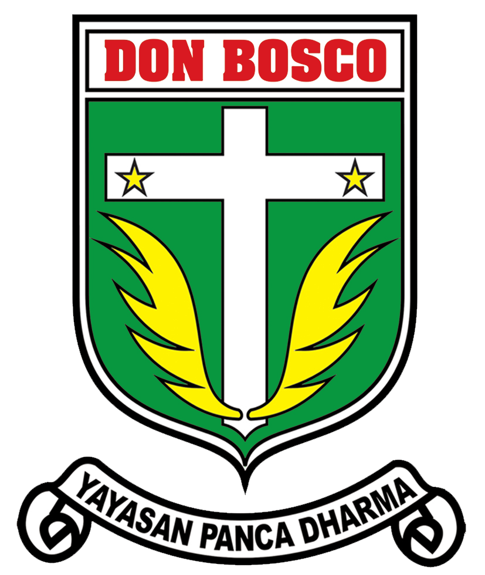
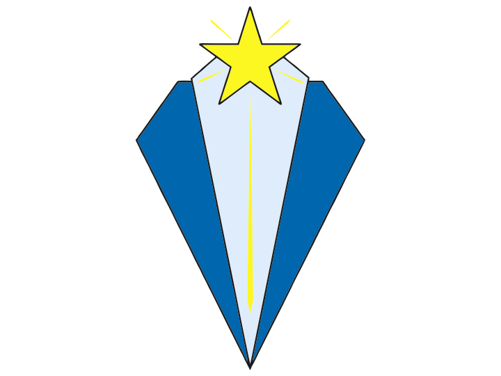
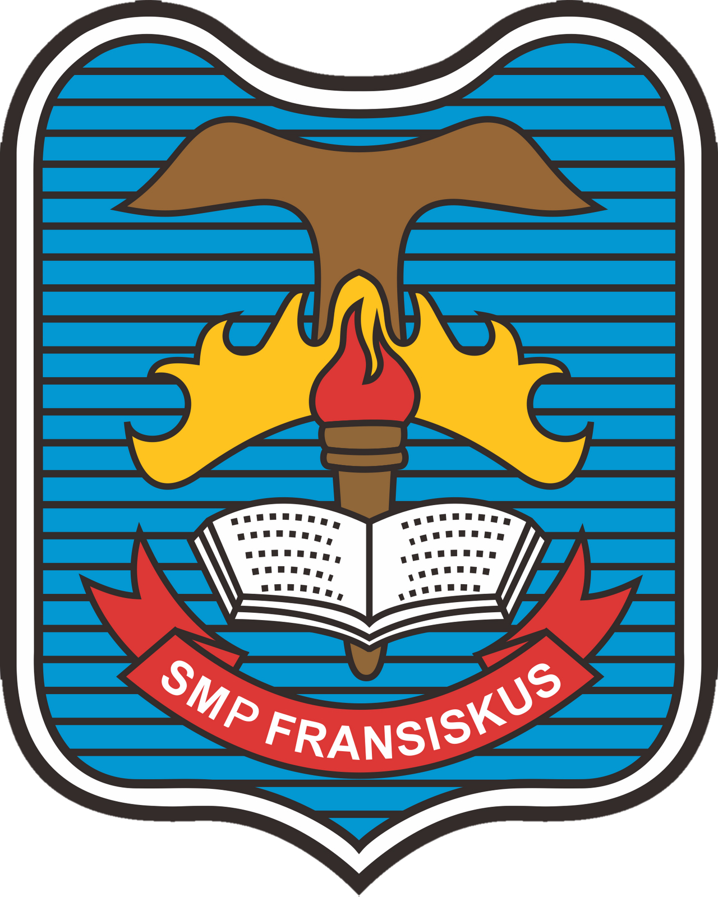
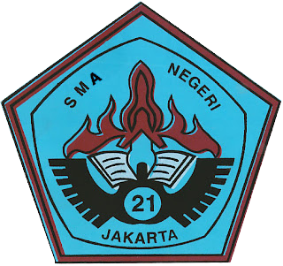

Edukasi
Sampai saat ini, saya telah melalui berbagai sekolah dalam menempuh pendidikan saya.
TK Don Bosco 2
Saya memulai pendidikan saya di TK Don Bosco 2 Pulomas. Don Bosco II adalah sebuah sekolah swasta Katolik yang berada di Jakarta Timur, Jakarta, Indonesia. Sekolah ini berada dibawah naungan Yayasan Panca Dharma.
SD Tarakanita 5
Saya melanjutkan pendidikan saya di SD Tarakanita 5. SD Tarakanita 5 atau merupakan sebuah Sekolah Dasar Swasta yang terletak di Jl.Pemuda No.6, Jakarta Timur, Indonesia. Sekolah ini diresmikan oleh Bapak Wiyogo Atmodarminto, Gubernur Kepala Daerah Khusus Ibukota Jakarta dan diberkati oleh Mgr. Leo Soekoto, SJ, Uskup Agung Jakarta pada tanggal 07 September 1988.
SMP Fransiskus 2
Setelah itu saya melanjutkan pendidikan saya di SMP Fransiskus 2. SMP Fransiskus 2 meruapakan sekolah swasta yang terletak di Jl. Bangunan Barat, RT.1/RW.8, Kayu Putih, Kec. Pulo Gadung, Kota Jakarta Timur, Daerah Khusus Ibukota Jakarta. Sekolah ini dinaungi oleh yayasan Dwi Bakti Bandar Lampung.
SMAN 21 Jakarta
Saya menempuh SMA di SMAN 21 Jakarta. Sekolah Menengah Atas Negeri 21 Jakarta adalah Sekolah Menengah Atas Negeri yang berada di bilangan Pulo Gadung, Jakarta Timur. Sekolah negeri dengan akredetasi A dan berstatus uggulan di DKI Jakarta ini setiap tahunnya menerima kurang lebih 224 murid baru.
Institut Teknologi Sepuluh Nopember

Saat ini saya sedang menempuh pendidikan di ITS Surabaya. Institut Teknologi Sepuluh Nopember atau disingkat ITS adalah perguruan tinggi negeri yang terletak di Surabaya, Jawa Timur. Pada awalnya, ITS didirikan oleh Yayasan Perguruan Tinggi Teknik (YPTT) yang diketuai oleh dr. Angka Nitisastro pada 10 November 1957..